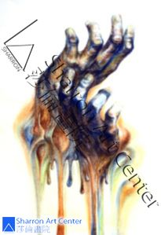

恩典小故事
文/图 刘莎伦
● 前几天我和一位11年级生聊，她说自从和朋友去教会后，她不再和母亲顶嘴了，也能体会父母的心意。但是她明确自己未来的主修是不可能妥协的，她认为哥哥也应该相信耶稣，因为他表面很顺从，但对父母的意见比她还多，担心他有一天会憋出毛病来。看起来极可爱可人的女孩子，想不到有这么多的想法和主见。很喜欢她有主的带领，真是又聪明又有明见。
● 一位学生申请RISD之前，正逢父母关系破裂，吵得天翻地覆，他只能每天照顾妹妹，煮食接送……每每他们再吵架时，他就把妹妹带出去。那个夏天，他学会了每天祷告。有一天去加油，逢打雷，路对面的另一家加油站起火，把他吓坏了，回家晚上又再祷告。
他的作品很优秀，但在那一年我的学生中，他比较起来并不算好，其他的功课等等只属普通。让人跌破眼镜的是，在以成绩拿奖学金，且通常奖学金数目很少的RISD，他拿到了几乎全奖！告诉我这个消息时，我哭了，感谢主，怜悯这个孩子，聆听他的祷告。现在，我还在挂念他。去了RISD后，没有时间去教会和神亲近，会忘记曾经带领他走过困境的上帝吗？
● 一位母亲告诉我，在她受洗之后她的祷告全部蒙垂听,在一个月之内三件大事同时实现：①等了12年的绿卡终于拿到了；②失业一年多，在那个月找到工作，且薪资多了不少；③女儿进入RISD，女儿说非RISD不念。在失业的情形下，她坚持让女儿来莎伦画院学习并加课，把失去的5年学习时间补回来，有何等大的信心啊！
(学生Laura的画作) 有时候伸手就与上帝相遇
(学生Laura的画作)
有时候伸手就与上帝相遇
有这么伟大的母亲日日祷告，女儿在毕业前一年找到一位MIT（麻省理工学院）毕业的男朋友。毕业后立即去上班 ，一下子就让她管30多人的部门。可惜的是，一向个性固执的女儿至今还没有相信上帝。我们把她交给上帝。（很可惜，她邀请我6月4日去参加她的毕业典礼。只请我和她的家人及男朋友。但我人不在美国，也错过同一日在纽约卡耐基中心举办的全美Scholastic盛大的颁奖典礼。再一次获“全美杰出教育家”荣誉，我本应该去；作为最多得奖学生的老师我也应陪同出席；加上金牌学生父母的邀请。但是这种恩典实在太多，在心里总感恩满怀，但从未出席过。）
● 另一位女孩在申请大学的分歧上与父亲有激烈的争执，引发忧郁症，非常难过且让人担忧。后来，听从我的建议，她自己走进一间教会……没多久，多次自称不容易信主的母亲，也自己走进教会……她对我说，若非我教她如何祷告，真不知那段日子要怎么度过。
我心中难过，是因为不舍我的孩子们——主交给我的这群小羊羔受苦。我感动，是因为主的能力和慈爱如此伟大，只要愿意接受祂的，必得着。
现在，我一直在关切正在欧洲最顶尖名校上学的这个孩子，神一定会保守她和她的全家！
● 一位从小就来莎伦画院学习的孩子，高中时和朋友一同去了教会（很感谢带她去教会的同学），受洗归入主的名下。申请大学时SAT还不到2000分，原本没达到RISD的录取线，绘画作品集很不错，但和我的同年级 的学生比算是最末的。而她，非RISD不念。她母亲不信上帝，但有一次梦到一位穿白衣袍的人，全身发光，对着她微笑。她说：“我知道妳是谁，妳是耶稣！”
我催促母亲叫女儿天天祷告，把一切交给主。RISD第一个录取的好消息是她！并且获得极高奖学金！大家都松了一口气：“那么，其他的学生就没问题了！”
开学之前，她母亲带着她去拜访RISD附近教友的家，主已为她预备好了基督徒接待家庭。
● 我们有数位男、女生，绘画作品集相当优秀，但SAT离RISD录取线差距几百分。只能祷告交给主了！最终他们全部进入RISD和其他名校，并皆获得高额奖学金！其中Xixi说，刚来美国时，天天和母亲吵架，又结交坏朋友。有一天又逃学，跑去做头发，发廊的女士问她为什么没去上学？聊起来，原来她已得癌症，但因为信了上帝满心欢喜，让Xixi很感动。后来每到关口，都有基督徒来帮助她。
● D在十年前常常和我争论上帝的真实性，后来她成为我主内的姊妹，女儿Jessica在选择大学时，原本属意另一间名校，我认为她应该选择康奈尔大学。在犹豫不决时，她们在最后关头，选择一个周五再次远赴康奈尔大学，特地去参加那里的查经小组，觉得非常好。当即决定赴康奈尔大学读建筑艺术规划学院，同时会有另一个双主修。
真正能以上帝的心意为自己心意者并不多，D让我敬佩。
● 有位学生的父母向主祷告要求某个数字的奖学金方让她去RISD，而该生只愿读RISD，对其他的全无兴趣。最后我们决定为她交差额的学费，一直到她毕业，以帮助她圆梦。妳能说这不是神的旨意？
● 小Lucy学画过程中有不少问题，我常与Lucy妈妈长时间交谈，归根到底是如何以上帝的方式去教育孩子？如何学会真正的交托，而非自己紧紧地抓住不放？如何从错误和失败中学习刚强？如何学会包容、接纳孩子的错误？如何让孩子从绘画的错误和纠正中建立独立和信心？……Lucy妈妈是个很有自己想法的人，但也是个愿意学习的好姊妹，敬畏上帝的基督徒。
基督徒也正在学习过程中，我们有缺点、错误，重要的是我们有神的引导、圣灵的提醒。
有时候,上帝离我们很远
有时候,上帝离我们很远
● 海云，一位美丽的女作家，竟然是我学生的母亲，只远远在停车场看见她一眼。喜欢她的文章，不仅仅是文字清新自然优美，也不仅仅是所述的题材或故事感人……而是每一篇文章，或散文或随笔，或写人或叙事，字里行间饱含着一位基督徒对上帝的敬畏，时时刻刻她都沈浸在这种恩典的思想中。感觉得到她对耶稣之爱之真之深之刻骨铭心。没有任何说教，行云流水般的，与她的文字一同融化在伟大造物主的温柔里。有坚定信仰，摸到上帝的心，且不吝啬融化在文字的像她这样的作家，罕有。实在是上帝的恩典！这是我极喜欢的缘故。
● 上耶鲁的马婵娟妈妈，您可曾记得几年前我曾对您说过：“我一定把马婵娟送进耶鲁！”今天马婵娟果真在耶鲁就学。当时我只是在为主说“预言”。
以前每次碰到您，都听到您大呼小叫“好倒霉 噢！”有一次差一点把车开翻到桥下面去。我说，应该感恩！后来您去了加拿大一年坐移民监，上帝让您无聊天天往楼下的教会跑。然后突然告诉您：回家了，您全家的美国绿卡办下来了。一年的移民监并非白坐。再遇到很多事及婵娟进耶鲁，妳大呼“恩典，真是恩典！”
我们的感恩故事几天几夜也说不完，每一位莎伦学生和家庭都有故事，无论是现在或将来，必要为主作更多更美好的见证。